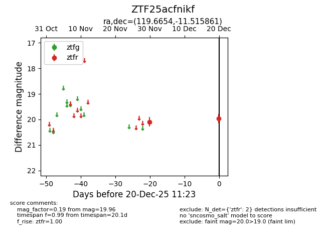
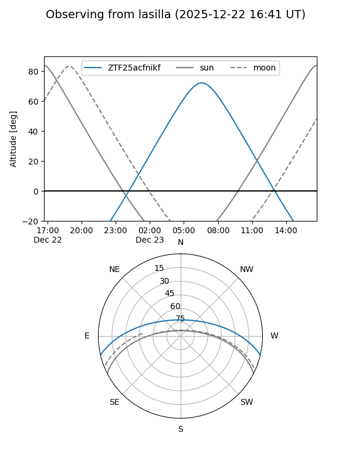
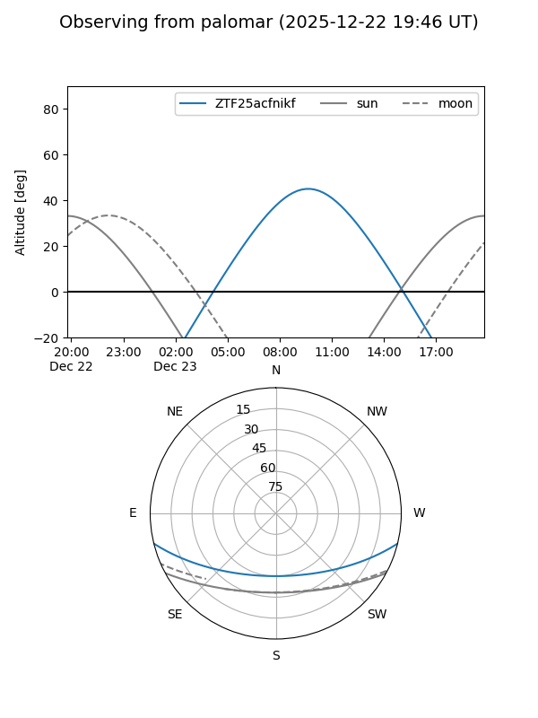

ZTF25acfnikf
Target ZTF25acfnikf at 2025-12-20 11:27
Aliases and brokers:
FINK: fink-portal.org/ZTF25acfnikf
Lasair: lasair-ztf.lsst.ac.uk/objects/ZTF25acfnikf
ALeRCE: alerce.online/object/ZTF25acfnikf
alt names
ZTF25acfnikf (ztf,fink_ztf)
Coordinates:
equatorial (ra, dec) = 119.6654,-11.51586
equatorial (HMS+DMS) = 07:58:39.69,-11:30:57.10
galactic (l, b) = (231.0468,+9.27134)
Flags:
Photometry:
last ztfr=19.96
2 ztfr detections
Lightcurve

Visibility


Additional plots